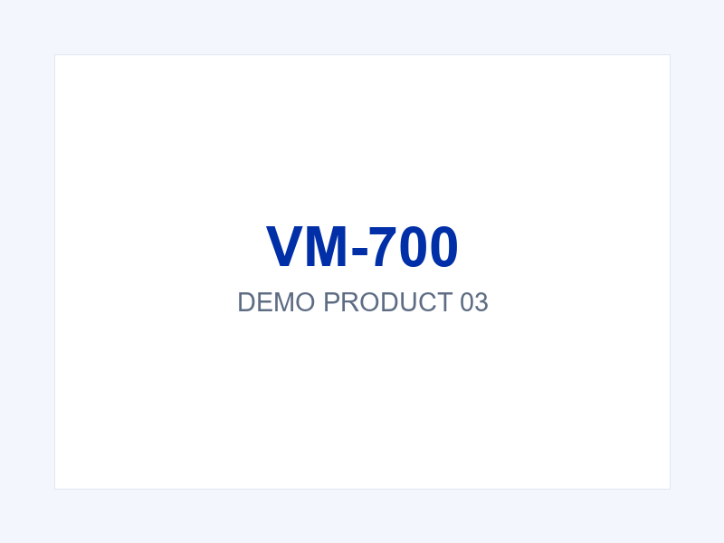

Reader Series
Fixed UHF RFID Reader
FR-300Fixed UHF RFID reader for warehouse gates and production lines.
Fixed UHF RFID reader for warehouse gates and production lines.

7-inch vehicle terminal with wide voltage input and vibration resistance.

12-inch rugged tablet with sunlight-readable display and hot-swappable battery.

5-inch industrial handheld terminal with barcode scanning and IP67 protection.